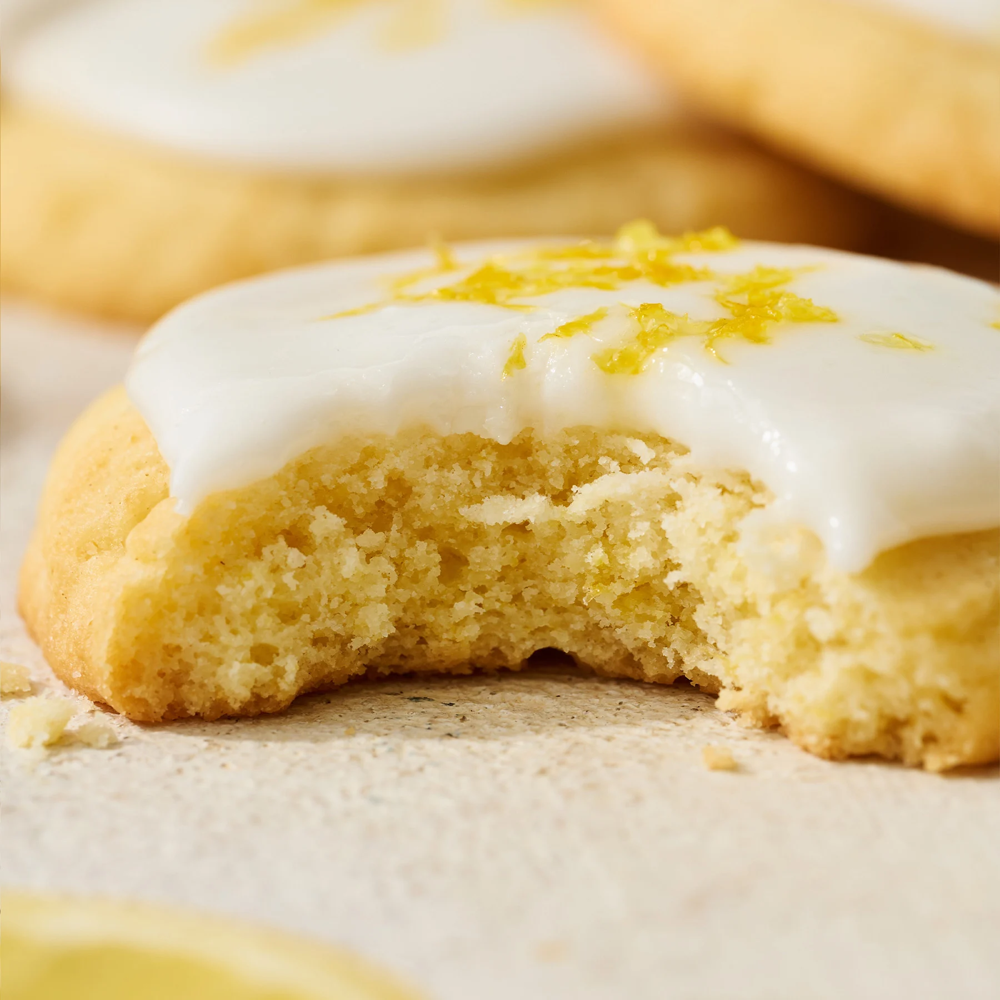
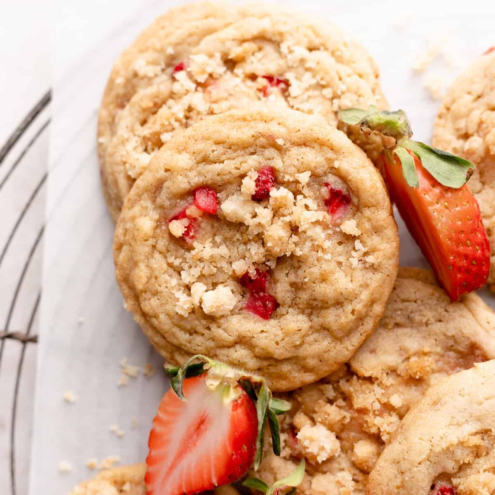
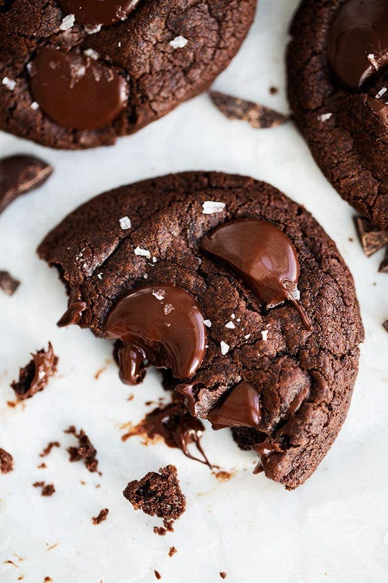
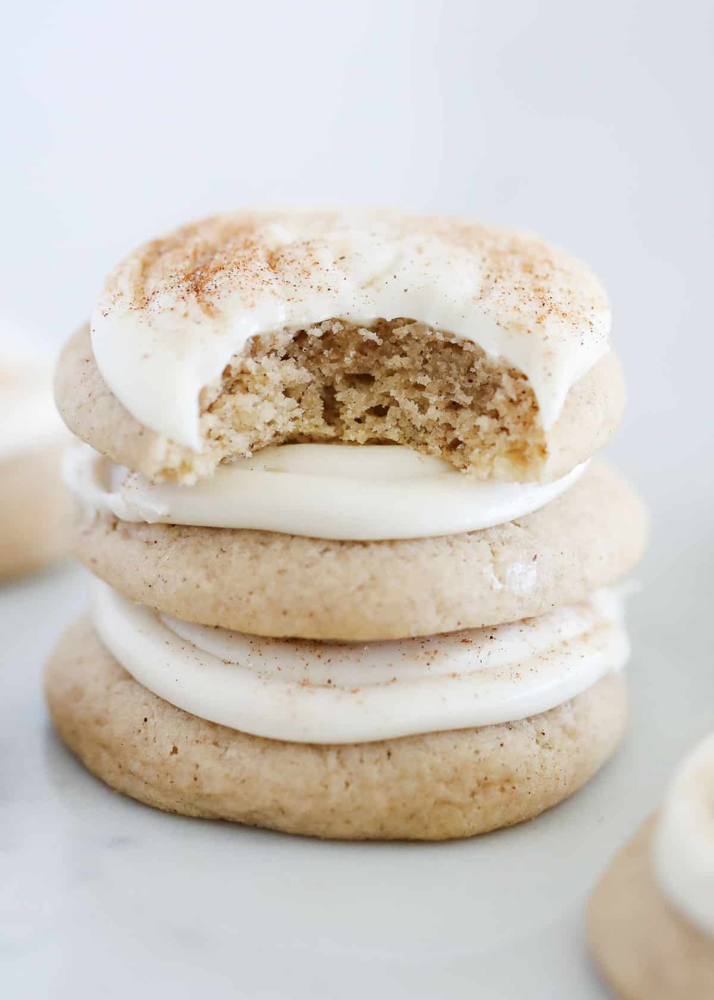

Lemon

Ingredients:
- 1 cup unsalted butter (softened)
- 1 cup sugar
- 1 large egg
- 2 tablespoons lemon juice
- 1 tablespoon lemon zest
- 2 1/2 cups all-purpose flour
- 1 teaspoon baking powder
- 1/2 teaspoon salt
Instructions:
- Preheat oven to 350°F (175°C).
- Add the egg, lemon juice, and lemon zest, mixing until combined.
- In a separate bowl, whisk together flour, baking powder, and salt.
- Gradually add the dry ingredients to the wet ingredients, mixing until fully incorporated.
- Bake for 10-12 minutes or until the edges are slightly golden.
Strawberry

Ingredients:
- 1 cup unsalted butter (softened)
- 1 cup sugar
- 1 large egg
- 1 teaspoon vanilla extract
- 1 cup fresh strawberries (mashed)
- 2 cups all-purpose flour
- 1 teaspoon baking powder
- 1/2 teaspoon salt
Instructions:
- Preheat oven to 350°F (175°C).
- Beat in the egg, vanilla, and mashed strawberries.
- Combine flour, baking powder, and salt in a separate bowl.
- Slowly mix the dry ingredients into the wet mixture until combined.
- Bake for 12-14 minutes until golden brown.
Choco Chip

Ingredients:
- 1 cup unsalted butter (softened)
- 3/4 cup sugar
- 3/4 cup brown sugar
- 2 large eggs
- 1 teaspoon vanilla extract
- 2 1/4 cups all-purpose flour
- 1 teaspoon baking soda
- 1/2 teaspoon salt
- 2 cups chocolate chips
Instructions:
- Preheat oven to 350°F (175°C).
- Add the eggs and vanilla, mixing well.
- In another bowl, whisk together flour, baking soda, and salt.
- Gradually add the dry ingredients to the wet ingredients.
- Stir in the chocolate chips.
- Bake for 10-12 minutes until golden brown.
Chocolate

Ingredients:
- 1 cup unsalted butter (softened)
- 1 cup sugar
- 1 large egg
- 1 teaspoon vanilla extract
- 1 3/4 cups all-purpose flour
- 1/2 cup cocoa powder
- 1 teaspoon baking soda
- 1/2 teaspoon salt
- 1 cup chocolate chips (optional)
Instructions:
- Preheat oven to 350°F (175°C).
- Add the egg and vanilla, mixing until smooth.
- In a separate bowl, whisk together flour, cocoa powder, baking soda, and salt.
- Gradually add the dry ingredients to the wet mixture.
- Stir in chocolate chips if using.
- Bake for 10-12 minutes until the edges are set.
Cinnamon

Ingredients:
- 1 cup unsalted butter (softened)
- 1 cup sugar
- 1 large egg
- 1 teaspoon vanilla extract
- 2 ½ cups all-purpose flour
- 1 teaspoon baking powder
- 1 tablespoon ground cinnamon
- ½ teaspoon salt
- Extra cinnamon and sugar for rolling
Instructions:
- Preheat oven to 350°F (175°C).
- Cream the butter and sugar together.
- Add the egg and vanilla, mixing until smooth.
- In a dif bowl, whisk flour, baking powder, cinnamon, and salt. Then incorporate it all
- Roll the dough into small balls and coat them in a cinnamon-sugar mixture.
- Bake for 10-12 minutes until the edges are golden.